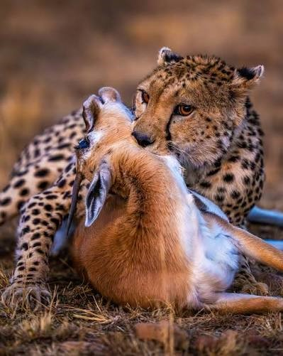
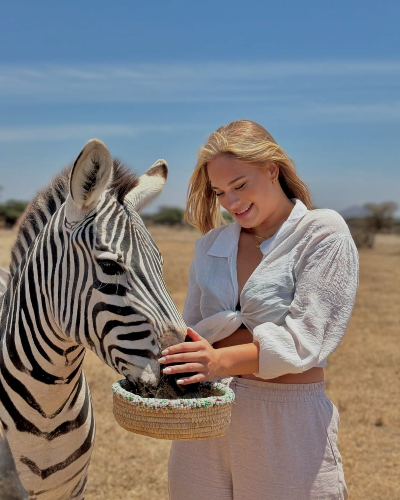
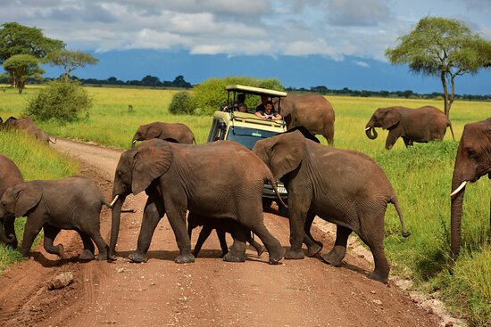
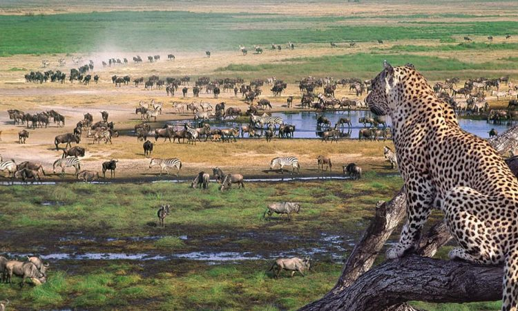
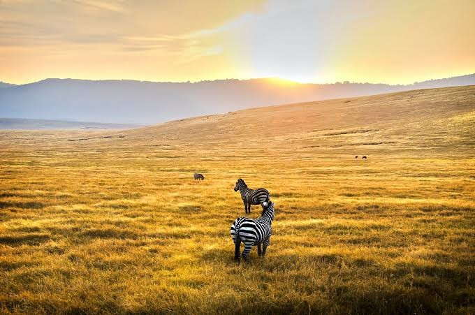
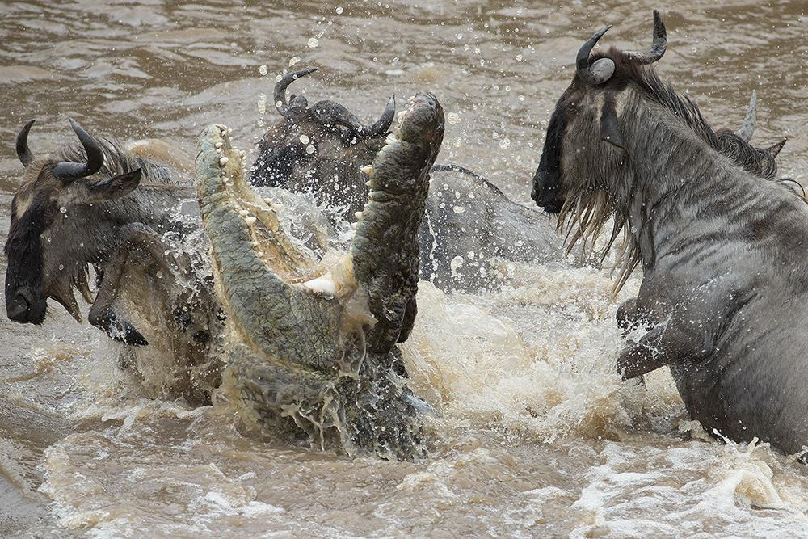
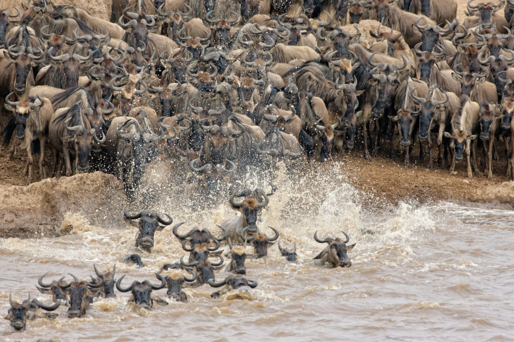
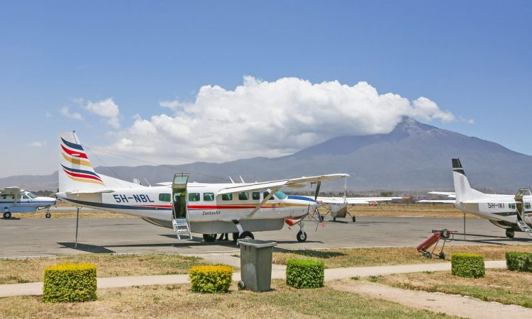

Welcome to your bespoke 12-day ultra-premium itinerary across East Africa's iconic ecosystems. This deployment features all private game tracking loops, high-clearance 4x4 utility profiles, specialized field guides, and top-tier luxury property selections calibrated for optimal migration viewing windows.

Day 1: Arrival in Jomo Kenyatta International Airport
Day 01Upon clearance with immigration officers at Jomo Kenyatta International Airport (NBO), you will be met by our logistics support staff and transferred directly to your city base camp for immediate relaxation, structural recovery, and overnight accommodation.

Day 2: Nairobi Base to Masai Mara National Reserve
Day 02Following breakfast, meet your professional driver-guide for the entirety of your Kenyan journey. Depart across the Great Rift Valley wall into the Maasai Mara sector. Arrive synchronized with luxury lunch service. Afternoon parameters consist of deep wilderness penetration and your introductory predator-tracking game loop.

Day 3: Masai Mara National Reserve — Full Day Tracking Deployment
Day 03An extensive full-day exploration sector within the iconic Maasai Mara reservation ecosystem. Armed with packed luxury picnic provisions, track mega-herds, resident pride lions, cheetah vectors, and elusive leopards across endless savanna plains. Return to the campsite in the evening for sunset relaxation and standard premium hospitality.

Day 4: Lake Naivasha — Boat Cruise & Crescent Island Exploration
Duration: 1 NightFollowing a leisurely breakfast, check out of your camp and depart towards the beautiful Great Rift Valley freshwater haven of Lake Naivasha. Arrive in perfect time to check in and enjoy a fresh luxury lunch at your resort. In the afternoon, embark on an exclusive boat cruise excursion across the lake's tranquil waters, drifting past pods of wallowing hippos and vibrant aquatic birdlife. Step ashore at the private Crescent Island Game Sanctuary for a guided walking safari. Here, walk alongside giraffes, zebras, waterbucks, and impalas in a rare predator-free environment. Return to the lodge for a serene lakeside dinner.
Accommodation: Lake Naivasha Sopa Resort / Kiboko Luxury Camp / Enashipai Resort & Spa
Day 5: Lake Naivasha to Amboseli National Park — Big Tuskers Corridor
Duration: 1 NightBid farewell to Naivasha as you board your private 4x4 safari cruiser and journey southeast towards Amboseli National Park, renowned for its massive elephant herds and unobstructed vistas of Mount Kilimanjaro. Arrive at your luxury lodge nestled in the heart of the park in time for lunch. In the late afternoon, set out for a targeted game tracking expedition through the dusty lake beds and lush swamps. Watch giant elephant bulls wade through the wetlands against the iconic backdrop of Africa's tallest mountain. Wind down the evening with a premium sundowner and dinner overlooking the plains.
Accommodation: Oltukai Lodge / Amboseli Serena Safari Lodge
Day 6: Namanga Border Crossing to Serval Wildlife & Arusha
Duration: 1 NightAn early breakfast precedes your drive to the Namanga Border Post. Complete your customs and immigration clearance with your driver-guide before crossing over into Tanzania, marking the start of your high-end combo extension. Connect with your expert Tanzanian tracking guide in a private 4x4 safari jeep. Head directly toward Serval Wildlife for an exclusive upscale eco-tourism luxury leisure day, interacting with hand-reared wildlife in an unconfined paradise. Late afternoon, drive through scenic Maasai steppes into Arusha for a relaxing evening, premium dinner, and overnight rest.
Accommodation: Arusha Lodge / Forest Hill Lodge / Gran Meliá Arusha
Day 7: Tarangire National Park — The Ancient Baobab & Elephant Haven
Duration: 1 NightDepart Arusha at 08:00 AM sharp and drive to Tarangire National Park, a pristine wilderness area often hailed as the paradise of elephants. This park features an incredible concentration of giant wildlife, striking terrain, and iconic ancient baobab trees. Spend a full, immersive day navigating game loops along the Tarangire River tracking lions, large herds of buffaloes, elusive leopards, zebras, and various antelopes drawn to the water. After an action-packed tracking deployment, exit the park gates and drive up to your designated luxury lodge for a gourmet dinner and overnight stay.
Accommodation: Manyara Secret / Tarangire Sopa Lodge
Day 8: Ngorongoro Conservation Area — Exploration of the Ancient Caldera
Duration: 1 NightEnjoy an early breakfast before driving to the Ngorongoro Conservation Area. Descend 600 meters down into the world-famous Ngorongoro Crater floor for a full-day tracking expedition. This UNESCO World Heritage site is celebrated for its unique multi-use lands and high density of wildlife trapped in an ancient volcano caldera. Track the rare black rhino, heavy-maned lions, majestic elephants, wildebeests, zebras, baboons, buffaloes, and leopards stalking the rim. Enjoy a picnic lunch inside the caldera before ascending late afternoon to check into your premier highlands estate for dinner and relaxation.
Accommodation: Acacia Farm Lodge / Ngorongoro Serena Safari Lodge
Day 9: Central Serengeti National Park — Tracking the Endless Plains
Duration: 1 NightJourney into the boundless horizons of the Central Serengeti National Park, the ultimate crown jewel of northern Tanzania. This iconic park is famed for its "endless plains" that never die, providing continuous, nutrient-rich grasses for millions of migratory animals. Embark on deep game drives traversing pristine savanna valleys where you can reliably track the Big 5 predators and massive herds. Central Serengeti serves as a vital corridor for over two million wildebeest migrating annually. Arrive at your camp by dusk for luxury tented hosting and gourmet dining.
Accommodation: Baobab Central Serengeti
Day 10: Northern Serengeti National Park — River Migrations Matrix
Duration: 2 Nights (Part 1)Set out early at 6:00 AM with a packed breakfast to track the massive herds moving toward the river. Experience high flexibility with your meals today, enjoying an atmospheric bush picnic on the plains or returning to camp for a hot lunch depending on live migration crossing movements. Track the Big 5 and monitor the dramatic landscapes of the northern ecosystem as the wildebeest and zebra herds converge on vital water sources.
Accommodation: Mara River Camp
Day 11: Northern Serengeti National Park — Mara River Crossings
Duration: 2 Nights (Part 2)After morning breakfast, take lunch and start your game drive around the central plains before sweeping back deep into the northern sectors of the Serengeti. This region becomes the main tracking theater from July to October along the Mara River, where millions of wildebeests and zebras brave high-security river predators during their seasonal migration crossings. Look out for lions, elephants, buffaloes, and leopards that rule this riverine frontier.
Accommodation: Mara River Camp
Day 12: Northern Serengeti to Kogatende Airstrip & JRO Departure
Final DayEnjoy your final morning breakfast in the wild plains of the Serengeti. Check out and embark on a short game drive en route to Kogatende Airstrip to catch your domestic flight to Kilimanjaro International Airport (JRO). Arrive in the afternoon/evening to connect seamlessly with your onward international flight back home, completing your 12-day custom East African combo expedition.
Flight Route: Kogatende Airstrip ➔ JRO Airport✓ Package Inclusions
- ▸ All applicable national park entrance fees and conservation levies
- ▸ All activities unless explicitly labeled as optional excursions
- ▸ Full premium hospitality accommodations as specified day-by-day
- ▸ Services of a dedicated professional driver-guide throughout the tracking routes
- ▸ All applicable hotel taxes, state levies, and value-added tax (VAT)
- ▸ Complete transportation in a private, high-clearance 4x4 Safari Jeep
- ▸ Free High-Speed Wi-Fi connectivity equipped inside the vehicle matrix
- ▸ Full meal plans as itemized (Emaara Ole Sereni features breakfast only)
- ▸ Chilled mineral water and cold sodas available inside the vehicle at all times
✕ Package Exclusions
- ▪ Outbound international flights and corresponding airport tax clearances
- ▪ Additional luxury accommodations before or at the final end of the tour
- ▪ Crew tips and gratuities (Recommended baseline guideline: $20.00 pp/day)
- ▪ Personal luggage items, souvenir shopping, and international travel insurance
- ▪ Regional Entry Visa Fees (Kenya & Tanzania entry clearance stamps)
- ▪ Optional Masai Mara traditional village entrance fees ($30.00 per person)
- ▪ Premium alcoholic spirit drinks and specialty bar orders
- ▪ Unexpected government-imposed increases of national taxes or park fees